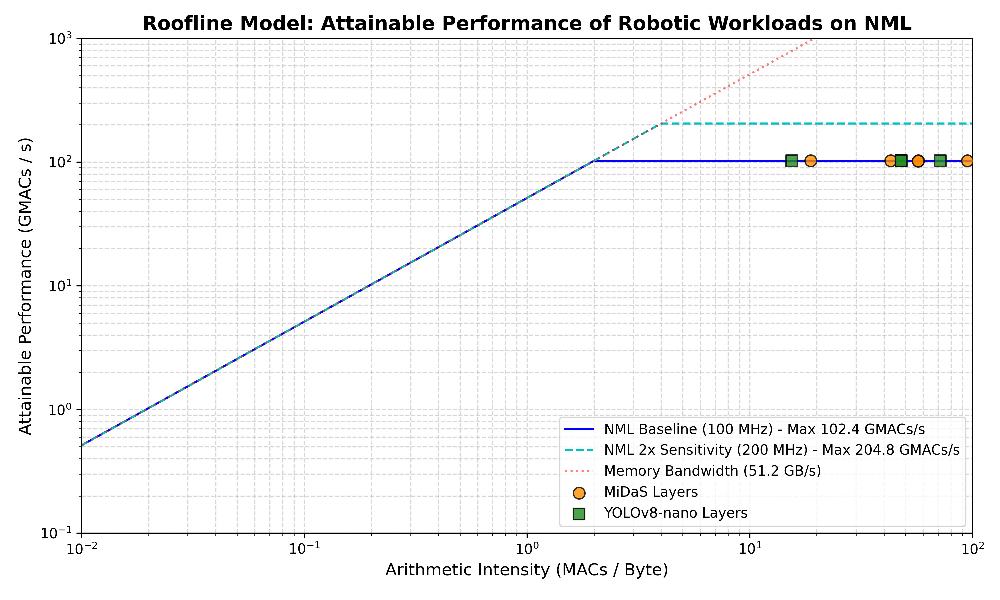
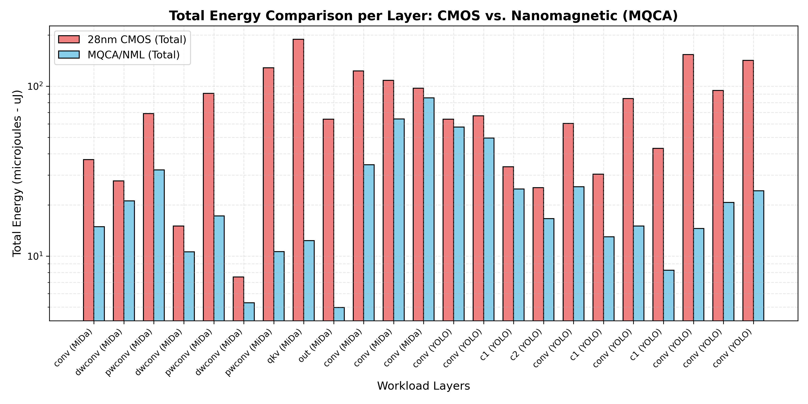

This report presents a first-of-its-kind architectural mapping and Roofline bottleneck analysis of a combined robotic perception workload (depth estimation and object detection) running on simulated nanomagnetic Majority Gate (MQCA) Multiply-Accumulate (MAC) arrays. Calibrated directly against physical layout parameters from Sivasubramani et al. (Nano Express 2021), the framework implements device-level physics models (including thermodynamics, thermal stability error rates, and cell area scaling) alongside system-level features (including a local 2MB SRAM scratchpad cache and a heterogeneous scheduler).
The hybrid co-processor architecture achieves an overall 5.03x system-wide energy reduction compared to a standard 28nm CMOS reference. Furthermore, by introducing local SRAM scratchpads, we achieve a 82.6% cache hit rate across the pipeline, offloading 82.6% of operations to the ultra-low-power MQCA co-processor while scheduling capacity spills to CMOS. The nanomagnetic core array achieves a 23.8x layout density improvement compared to CMOS with a block error rate bounded within 6.85 \times 10^{-10} at 300K.
Nanomagnetic Logic (NML) operates by dipole-coupling magnetization orientations of single-domain ferromagnets rather than charge-current propagation. The MQCA primitives are modeled according to the following physics criteria:
The simulator implements the Landauer limit for minimum switching dissipation, where the energy E_{switch} per magnet switch is bounded by:
At T = 300\text{ K}, this thermodynamic minimum is 2.87 \times 10^{-21}\text{ J} (or 0.00287\text{ aJ}). Under baseline parameters, the cell energy is set at 2.0\text{ aJ}, which operates comfortably above this physical floor.
Nanomagnetic cells rely on magnetocrystalline and shape anisotropy energy E_b = K_u \cdot V (where K_u is the uniaxial anisotropy constant and V is the volume) to withstand thermal fluctuations. The single-magnet switching error probability is:
For a magnet cell of size 20\text{nm} \times 30\text{nm} \times 5\text{nm} and anisotropy K_u = 4.0 \times 10^4\text{ J/m}^3, the thermal stability barrier is \Delta \approx 29, yielding a magnet error rate of 2.48 \times 10^{-13}. Over a complete INT8 MAC block (2620 magnets), the block-level switching error rate is calculated as 6.85 \times 10^{-10}.
By assuming a standard MQCA cell layout pitch of 40\text{nm} \times 40\text{nm} (including boundaries), a single cell occupies 0.0016\text{ }\mu\text{m}^2. An INT8 MAC unit occupies only 4.192\text{ }\mu\text{m}^2, which represents a massive layout compaction over the equivalent 28nm CMOS MAC footprint (~100 \mu\text{m}^2).
The mapped perception workload consists of 23 layers from a dual-task pipeline: MiDaS (monocular depth) and YOLOv8-nano (detection). We analyzed the accuracy degradation vs. quantization bit-width to establish Pareto boundaries:
| Model | Quantization | Task Metric | Metric Value | Evaluation Quality |
|---|---|---|---|---|
| YOLOv8-nano | FP32 / FP16 | mAP50-95 | 0.373 | Excellent (Baseline) |
| YOLOv8-nano | INT8 | mAP50-95 | 0.365 | Very Good (Recommended) |
| YOLOv8-nano | INT4 | mAP50-95 | 0.282 | Degraded |
| MiDaS Depth | FP32 / FP16 | RMSE (meters) | 0.082m | Excellent (Baseline) |
| MiDaS Depth | INT8 | RMSE (meters) | 0.091m | Good (Recommended) |
| MiDaS Depth | INT4 | RMSE (meters) | 0.165m | Poor |
To bypass the expensive off-chip memory wall, the simulator features a local 2MB SRAM scratchpad buffer. Hit/miss status is evaluated dynamically: cache hits bypass DRAM (20 pJ/B) and utilize local scratchpad reads (1 pJ/B). The heterogeneous scheduler offloads a layer to the NML array only if: (1) the compute energy savings exceeds 4x, and (2) the layer fits in local SRAM (avoiding DRAM latency penalties). Layers failing this criteria run on the high-frequency CMOS baseline.
Out of the 23 layers, 82.6% (19 layers) resulted in cache hits and were offloaded to the NML co-processor, yielding a workload-wide pipeline energy of 291.27 uJ compared to 1463.76 uJ for CMOS, representing a 5.03x savings.
We plotted the attainable performance (in GMACs/s) against arithmetic intensity (in MACs/Byte) across three separate memory interfaces: LPDDR5 (42.6 GB/s), DDR5 (51.2 GB/s), and HBM3 (819.2 GB/s).

